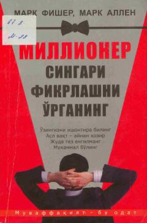

MSMillionerlardek fikrlash va muvaffaqiyatga erishish sirlarini o'rganing.
Ushbu kitob muvaffaqiyat va badavlatlik formulasi, inson o'zini yutuq hamda baxtga qanday dasturlashi va buni ong ostiga singdirish yo'llari haqida hikoya qiladi. Mark Fisher va Mark Allen o'zlarining shaxsiy tajribalari va amaliy tavsiyalari asosida o'quvchilarga millionerlarcha fikrlashni o'rgatadi.